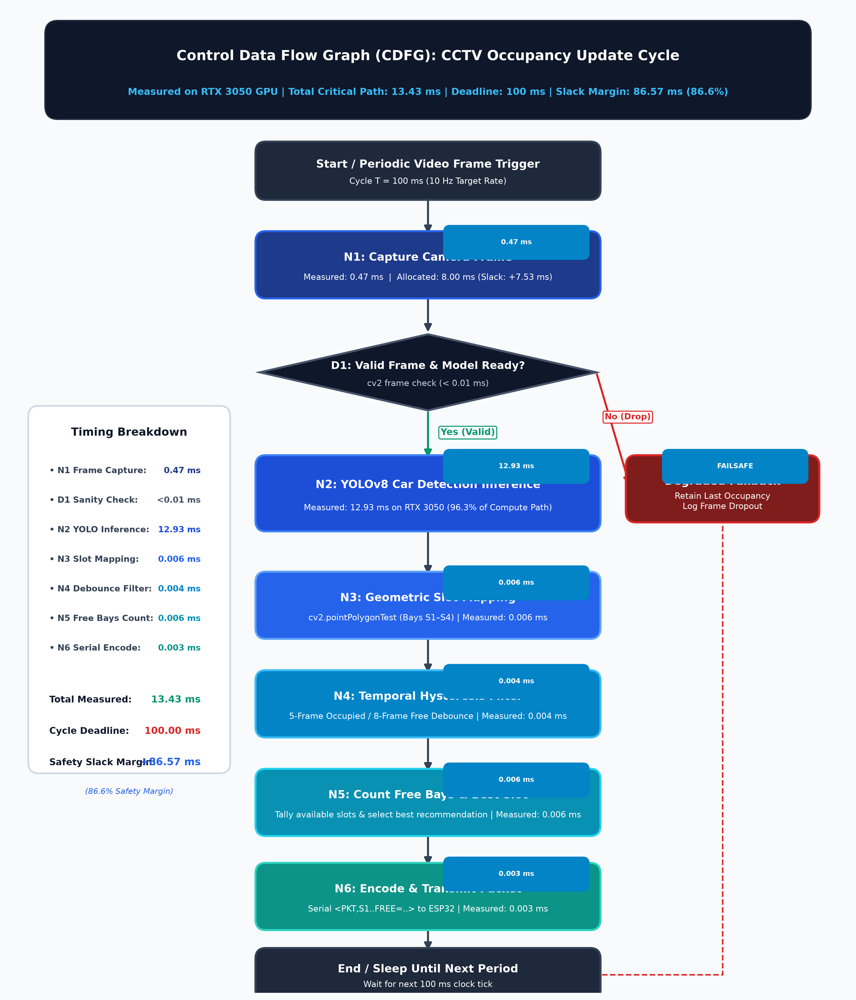
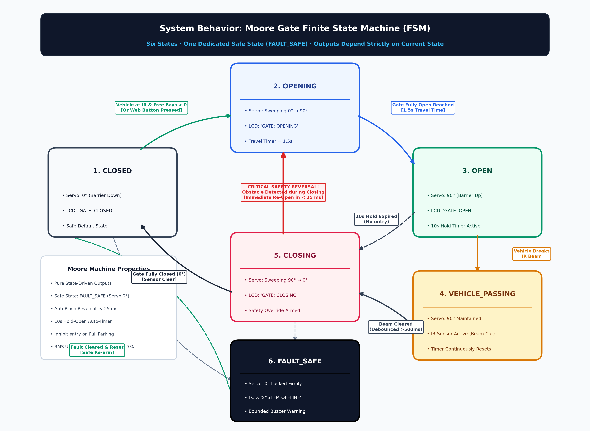

High-resolution, measured-benchmark diagrams for BACSE324 Review 2 presentation & report.

Total critical path: 13.43 ms against 100 ms deadline (86.6% safety margin)

6 states, FAULT_SAFE recovery, anti-pinch reversal in <25 ms, 10s auto-close timer
c:\Users\kesha\Desktop\embedded\smart-parking-system\cdfg_diagram.drawio
fsm_diagram.drawio